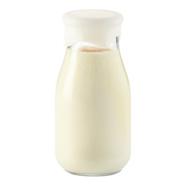
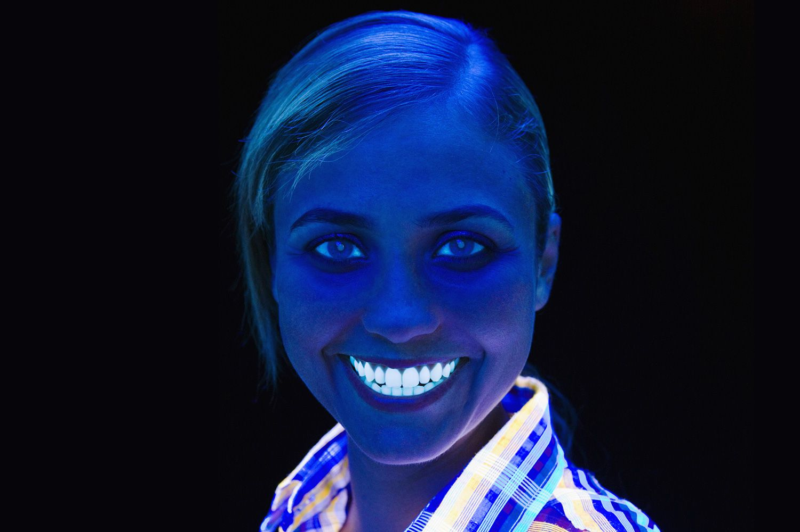
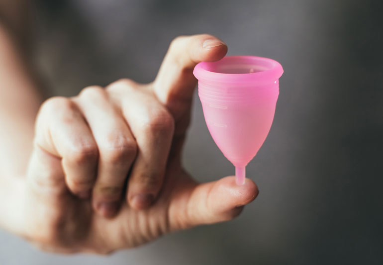

Editor's Edit: Products We Love
As the day of herd immunity approaches, here’s some tips on how to look effortlessly beautiful while holding space for what we’ve lost (and gained!) during this pandemic.
This Robe Makes Me Look Like My Grandmother Right at the Second She Died
I was there the moment Nana passed away, and with this robe, I get the privilege of living that iconic moment! She didn’t die of COVID or anything crazy, she was just old and smelled like stale graham crackers. You, too, can look like my Nana right as her soul left her corporeal form and tore through the iron shackles of existence. It’ll be a good look AND a great conversation starter. Who doesn’t love a statement piece?!

I Stopped Moisturizing and Started Asking My Flatmate to Cum (On Me)
Naturally, every woman wants her skin to be glowing, dewy, and hairless. Sometimes, toxic self-care leads us to buy all the best and most expensive products: Estee Lauder, Olay, Clean and Clear, even Jergens. All this glop just clogs your pores, drains your wallet, and clutters your vanity. But what if the most moisturizing substance was inside of Robert, my roommate Angela's boyfriend, the whole time? Over the course of the pandemic, Robert and I (and Angela) have gotten closer. Instead of wasting plastics, I have Robert’s biological excess delivered to me straight. After all, Gianna Michaels does have the smallest pores I've ever seen...

How to Make Use of Rave Gear During This Lost Year and Work on Dental Hygiene at the Same Time!
A way to clear out all the old rave gear before the new post-COVID festival season is to incorporate glow sticks into your morning routine. Before consuming any food or drink, be sure to pull the gunk from your teeth with about 2 tablespoons of fresh-squeezed juice from a glow stick. Rinse for 15 minutes. DON’T SWALLOW; you may die if you do. Your teeth will surely benefit from a neon shine and results will be seen within 6 hours. This is perfect for the days when your friend (who is also vaccinated) exclaims, “Let me see your teeth!”

For Him: The New Divo Cup
If your man is jealous of your sustainable menstrual blood collector, you could get him his own Divo Cup. It’s a jockstrap that stores cum, for the ever-on-the-go business man, or the gamer who’s fingers are too dusty. Tissues are for snot, not semen.